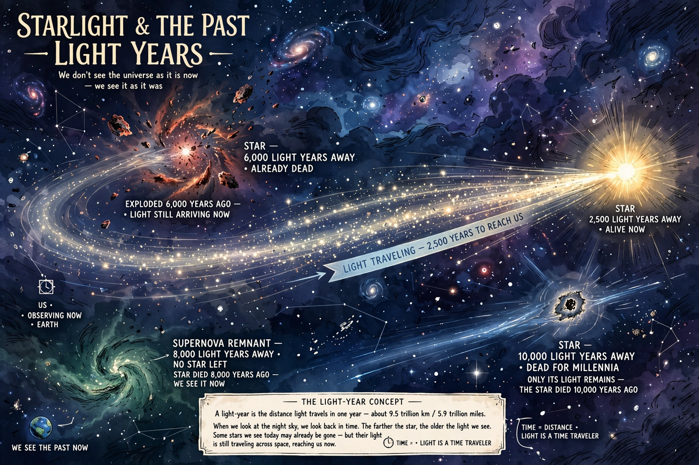

Sabías que de las estrellas que vez la mayoría ya están muertas?

La luz no es instantánea. Viaja a 300,000 km por segundo, que es muy rápido, pero el universo es tan enorme que tarda años en llegar.Un año luz es la distancia que recorre la luz en un año: 9.4 billones de kilómetros. Cuando miras una estrella que está a 1,000 años luz, la luz que entra a tus ojos salió de esa estrella hace 1,000 años. Si esa estrella explotó ayer, nosotros la seguiremos viendo brillar durante 1,000 años más.Esto significa que el cielo nocturno es una máquina del tiempo. El Sol que ves ahora mismo es como era hace 8 minutos y 20 segundos. Si el Sol se apagara de golpe, no nos enteraríamos hasta 8 minutos después. Y cuando vemos galaxias a millones de años luz, las vemos como eran cuando ni siquiera existían los dinosaurios.
pagina4